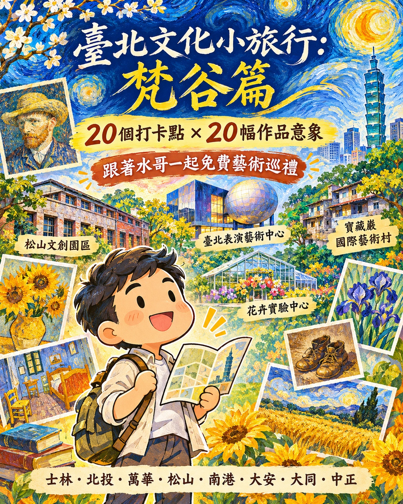

2026 季節限定 · 臺北文化小旅行
跟著梵谷，走進臺北的色彩
20處文化據點，把熟悉的街角變成藝術探索的起點。搭捷運、慢慢走，讓日常多一點想像。
活動截止：2026/12/1 23:59（臺灣時間）
探索20處景點官方活動辦法
藝術走出美術館
臺北市政府文化局於2026年9月23日推出梵谷主題文化小旅行，從文化100點選出20個場域，設置與名畫呼應的期間限定壁貼。這不是梵谷原作展覽，而是城市公共文化體驗。
活動至2026年12月1日23:59截止。打卡活動不必購買展覽套票，但各場館可能有入場、預約、收費或開放限制，請先查詢。活動結束後壁貼不一定保留。
20處官方指定文化景點
依區域整理，地圖連結供查詢位置及即時大眾交通；壁貼位置請以官方活動地圖為準。
查看官方20點地圖北投兒童樂園
地圖與交通查詢 ↗唭哩岸打石文化展示牆
地圖與交通查詢 ↗臺北表演藝術中心
地圖與交通查詢 ↗花卉試驗中心
地圖與交通查詢 ↗新芳春茶行
地圖與交通查詢 ↗臺灣新文化運動紀念館（扇形拘留室及水牢）
地圖與交通查詢 ↗臺北市中山堂
地圖與交通查詢 ↗福德爺長慶廟（榕樹）
地圖與交通查詢 ↗寶藏巖歷史大斷面
地圖與交通查詢 ↗蟾蜍山煥民新村（蟾蜍山大客廳）
地圖與交通查詢 ↗日善公園（防空洞）
地圖與交通查詢 ↗西本願寺廣場
地圖與交通查詢 ↗天主教聖家堂
地圖與交通查詢 ↗殷海光故居
地圖與交通查詢 ↗漢聲雜誌社（漢聲巷）
地圖與交通查詢 ↗臺北偶戲館（庫房）
地圖與交通查詢 ↗松山文創園區（松山菸廠廠歌石碑）
地圖與交通查詢 ↗臺北流行音樂中心
地圖與交通查詢 ↗南港茶葉製造示範場
地圖與交通查詢 ↗水哥推薦的分區散步構想
下列為自行規劃的順遊建議，不是官方導覽團；請使用地圖查詢當日步行、公車與捷運轉乘。
北投眷村與石文化
北投中心新村、北投兒童樂園、唭哩岸打石文化展示牆。可利用淡水信義線分段走訪。
西區歷史散步
臺灣新文化運動紀念館、新芳春茶行、中山堂、西本願寺廣場。依開館時間安排順序。
東區文創半日遊
臺北偶戲館、松山文創園區、漢聲巷。留些時間逛街區、欣賞建築。
士林藝術與花草
臺北表演藝術中心與花卉試驗中心。兩者並非緊鄰，建議搭配公車轉乘。
怎麼參加打卡活動？
- 前往官方指定的20處景點之一，找到梵谷壁貼。
- 拍攝壁貼或與壁貼合影。
- 到文化局 Facebook 指定活動貼文提交照片，依官方規則完成參加程序。
最後一輪抽獎為12月2日，預計12月7日於指定貼文公告，該輪包含30台拍立得及40份紀念方巾。另有文化100點照片風格轉換及YouBike合照活動，規則各自不同。
官方參加入口與完整規則出發前的小提醒
- 確認各場地開放時間、休館日及拍攝規範；私人或宗教空間請保持禮貌。
- 不用一天走完20點，挑選同區域的景點更輕鬆。
- 穿好走的鞋、帶水與雨具，素食餐點可先查詢附近店家或自備簡單點心。
- 本頁封面為主題插畫，非實際壁貼位置或現場照片。
用旅行收藏風景，用藝術豐富生活。讓臺北的街角，也成為心中的一幅畫。
收藏這份攻略
返回水哥趴趴走首頁資料來源
查核日期：2026/11/24。
臺北市政府文化局 2026/9/23 新聞稿
官方活動介紹及玩法
官方梵谷現蹤20點
本站為個人旅遊資訊整理，非活動主辦方。最新資訊以主辦方公告為準。